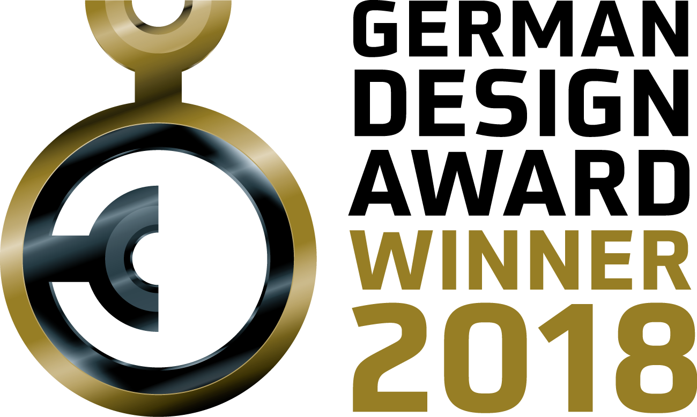
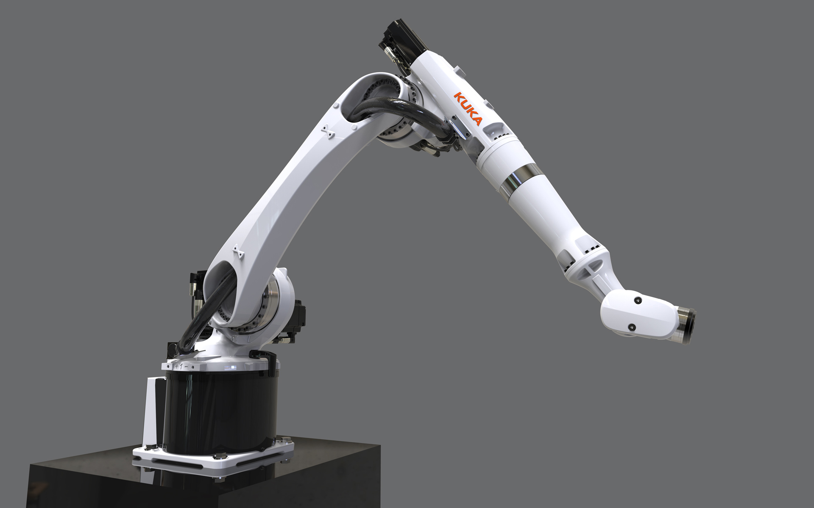
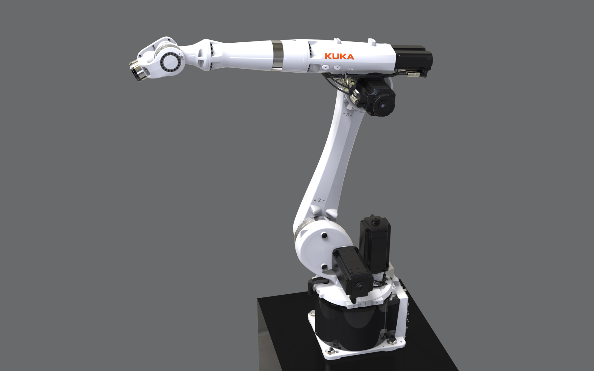
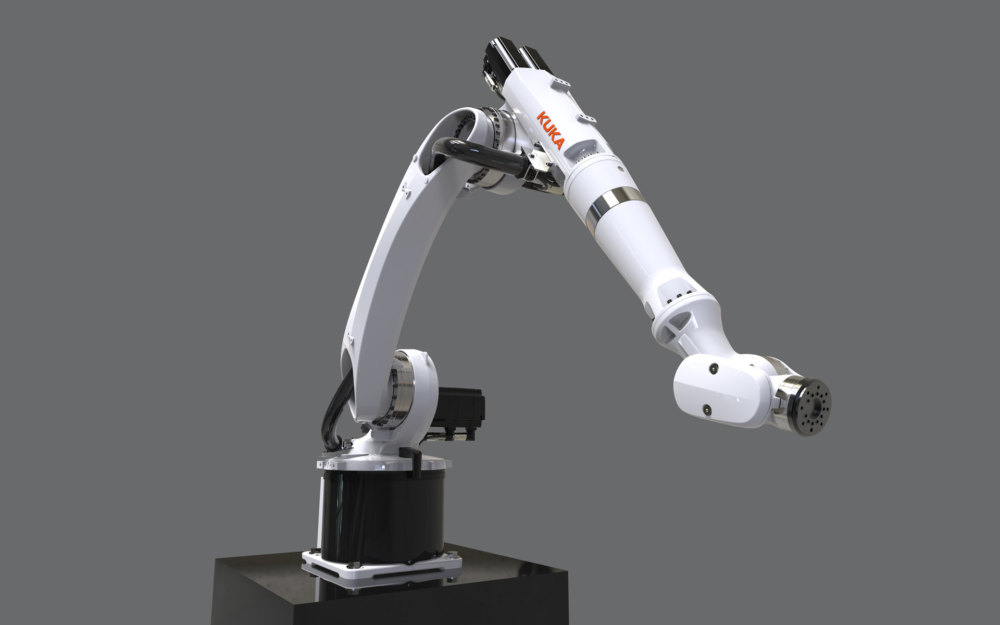
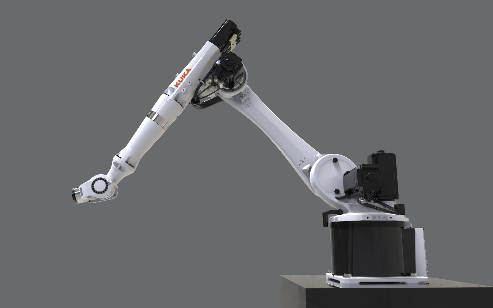

KUKA KR 20 CYBERTECH
Industrial Robot
KUKA KR 20 CYBERTECH
Industrieroboter
Fast and agile, reliable and precise.
A robot that needs to be extremely flexible and cover a huge work space to be optimally suitable for many
applications in industrial production and to open new branches as well.
The KR 20 CYBERTECH contains all of these characteristics and is the answer to the increasing demands in
the field of automation in the general Industry. Outstanding performance, smooth and sensitive motion
characteristics on the path and precise positioning with an accuracy of 40 micrometers are setting a new
benchmark in the 20 kg payload category.
Customers benefit from its compactness, minimal disruptive contours and maximum freedom in production:
the robot masterfully covers workspaces with 23 m3 volume and reaches long distances up to 2013 mm that
were previously inaccessible for conventional robots in this category. An economical use of materials
improves energy efficiency and promotes sustainability.
Its design is conspicuously slender and emphasizes the easiness. It shows that a filigree form language
can be united with maximum performance. Moreover it becomes an unique selling proposition.
Selić Industriedesign service: Design concept, design consultation, design sketches, CAD design support,
CAD freeform modeling, design refinement, processing of design data for the engineering department
Schnell, beweglich, zuverlässig und präzise.
Ein Roboter, der einen großen Arbeitsraum abdecken und äußerst flexibel einsetzbar sein soll, damit dieser
für viele Anwendungen in der industriellen Produktion bestens geeignet ist und um neue Branchen zu
erschließen.
Der KR 20 CYBERTECH besitzt all diese Eigenschaften und ist die Antwort auf die stetig wachsenden
Anforderungen in der Automation. Er setzt eine neue Benchmark in Performance und Leistungsdichte bei
höchster Präzision mit einer Wiederholgenauigkeit von 40 Mikrometern und kann auch bei maximalem Tempo
seine Stärken voll ausspielen.
Kunden profitieren von der volumenreduzierten Kompaktheit und dem maximalen Freiraum in der Produktion:
Souverän erschließt der Roboter einen Arbeitsraum mit 23 m3 Volumen und überbrückt mit 2013 mm weite
Distanzen, die für bisherige Roboter in dieser Klasse nicht erreichbar waren. Der sparsame
Materialeinsatz reduziert den Energieaufwand und unterstreicht die Nachhaltigkeit.
Sein Design ist auffällig schlank und betont die Leichtigkeit. Es zeigt, dass eine filigrane
Formensprache mit einer maximalen Performance zu vereinen ist und zum unverwechselbaren
Alleinstellungsmerkmal wird.
Selić Industriedesign Dienstleistung: Designkonzept, Designberatung, Designentwürfe,
CAD-Designunterstützung, CAD-Freiform-Modellierung und Detailgestaltung, Aufbereitung von Designdaten
für die Konstruktion




Images © Selić Industriedesign